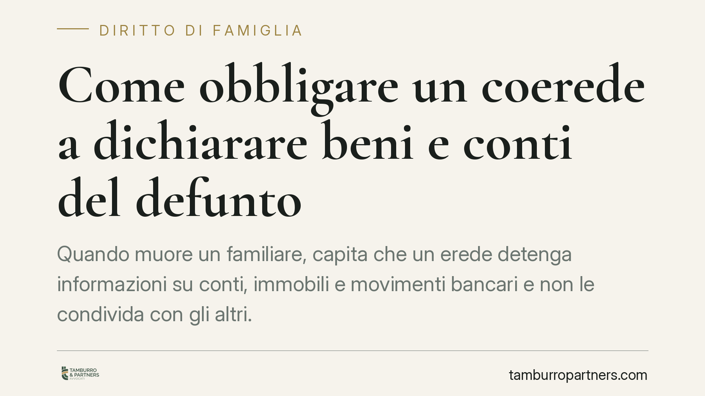

Come obbligare un coerede a dichiarare beni e conti del defunto
Quando muore un familiare, capita che un erede detenga informazioni su conti, immobili e movimenti bancari e non le condivida con gli altri. L'ordinamento offre strumenti precisi per far emergere la reale consistenza del patrimonio: inventario, rendiconto tra comunisti e ordine giudiziale di esibizione. Vediamo come funzionano e quali passi valutare quando manca la collaborazione.

Il problema: chi controlla, chi resta all'oscuro
Alla morte di una persona, i beni cadono in comunione ereditaria tra gli eredi. Spesso, però, uno solo di essi conosceva la situazione patrimoniale del defunto: dove erano i conti, quali immobili esistevano, quali movimenti erano avvenuti negli ultimi mesi di vita. Gli altri coeredi si trovano privi di informazioni essenziali per stimare la propria quota.
Il coerede che detiene questi dati non è libero di tenerli per sé. Su di lui gravano obblighi informativi e, in alcune situazioni, un vero e proprio dovere di rendere conto della gestione dei beni comuni.
Inquadramento normativo
Il primo strumento è l'inventario. Chi accetta l'eredità con beneficio d'inventario deve redigere l'elenco dei beni e dei debiti nei termini previsti dall'art. 485 cod. civ. L'inventario fotografa la consistenza del patrimonio ereditario ed è opponibile agli altri coeredi.
Il secondo strumento riguarda la gestione dei beni comuni. Tra coeredi si applicano le regole della comunione (artt. 1100 e seguenti cod. civ.): chi amministra i beni comuni è tenuto a rendere conto della propria gestione. Questo obbligo di rendiconto trova fondamento, in via analogica, nella disciplina del mandato (art. 1713 cod. civ., che impone al gestore di rendere conto del proprio operato). Sul piano processuale, il procedimento di rendiconto è disciplinato dagli artt. 263-266 cod. proc. civ.: il coerede può chiedere al giudice di ordinare all'altro di presentare il conto della gestione.
Infine, quando servono documenti in possesso della controparte o di un terzo, entra in gioco l'ordine di esibizione ex art. 210 cod. proc. civ.: il giudice, su istanza di parte, può ordinare l'esibizione di documenti rilevanti per la causa, compresi gli estratti conto bancari.
Il nodo degli estratti conto
Gli estratti conto del defunto sono spesso il documento decisivo. Le banche, in presenza di più eredi, tendono a fornire informazioni solo a chi dimostra la propria qualità e, talvolta, oppongono la riservatezza verso gli altri contitolari.
Lo strumento processuale è l'ordine di esibizione ex art. 210 cod. proc. civ., che consente di acquisire in giudizio la documentazione bancaria. In ambito stragiudiziale, ciascun erede ha comunque diritto di rivolgersi all'istituto di credito per ottenere la documentazione relativa ai rapporti del defunto, in quanto subentrato nella posizione contrattuale.
Sul piano dell'onere della prova, va usata prudenza: parte della giurisprudenza di merito tende ad attribuire al coerede che ha gestito i conti l'onere di giustificare le movimentazioni, ma si tratta di un orientamento non uniforme, da verificare caso per caso. È un errore darlo per scontato.
Prelievi non giustificati: restituzione, non collazione
Occorre distinguere due istituti spesso confusi.
La collazione (artt. 737 e seguenti cod. civ.) riguarda le donazioni ricevute in vita dal defunto da parte di discendenti e coniuge: chi le ha ricevute deve conferirle alla massa da dividere. Non copre genericamente le somme prelevate senza titolo.
I prelievi ingiustificati effettuati sui conti del defunto rientrano invece nell'obbligo di restituzione o di imputazione alla massa comune: chi ha prelevato senza titolo deve rendere conto di quelle somme e restituirle alla comunione ereditaria. Confondere i due piani porta a impostare male la domanda giudiziale.
Profilo penale: cautela, non automatismi
La sottrazione o l'appropriazione di beni comuni può, in casi specifici, integrare il reato di appropriazione indebita (art. 646 cod. pen.). Va però evitato ogni automatismo: non ogni prelievo o disaccordo sulla gestione ha rilievo penale. La valutazione richiede analisi del singolo caso e va tenuta distinta dal contenzioso civile sulla divisione.
Termini
Due precisazioni utili. La petizione di eredità (l'azione con cui l'erede rivendica i beni ereditari verso chi li detiene) è imprescrittibile. È imprescrittibile anche l'azione di divisione: nessuno può essere costretto a restare nella comunione. Le singole pretese restitutorie o risarcitorie restano invece soggette ai rispettivi termini di prescrizione.
Cosa fare in concreto
- Ricostruisci il quadro documentale: recupera la documentazione in tuo possesso e richiedi alle banche gli estratti conto del defunto in qualità di erede.
- Valuta l'inventario: se l'eredità è stata accettata con beneficio d'inventario, esamina se l'elenco redatto ex art. 485 cod. civ. è completo.
- Attiva il rendiconto: se un coerede ha amministrato i beni comuni, chiedigli formalmente il conto della gestione; in mancanza, valuta il procedimento ex artt. 263-266 cod. proc. civ.
- Richiedi l'ordine di esibizione: in giudizio, chiedi l'esibizione ex art. 210 cod. proc. civ. dei documenti bancari e patrimoniali detenuti dalla controparte.
- Fatti assistere prima di agire: distinguere prelievi restituibili, collazione e profili penali richiede una qualificazione tecnica preliminare.
---
Contributo informativo a cura di Tamburro & Partners Avvocati. Non costituisce parere legale.
Ogni famiglia ha il suo equilibrio.
Separazione, divorzio, affidamento, assegno: se vuoi un confronto riservato su una specifica situazione, scrivi allo studio. Ti rispondiamo entro un giorno lavorativo.